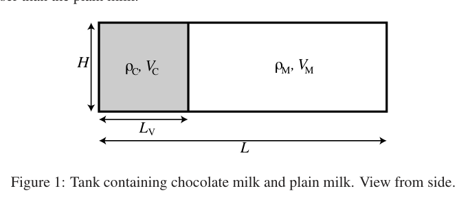
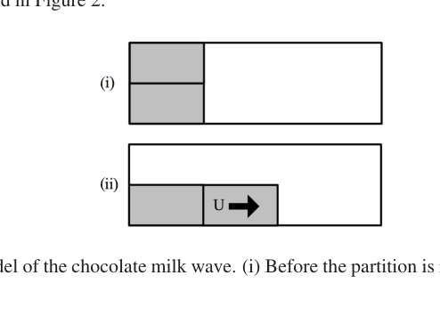
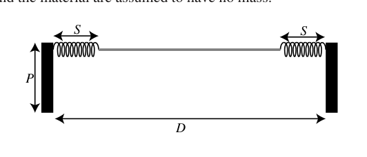
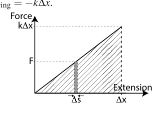
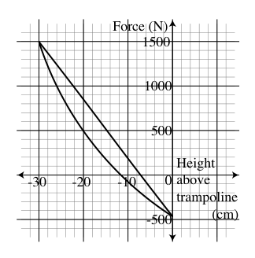

Question 1 A book lies at rest on a table. The table is at rest on the surface of the Earth. The Newton’s Third Law reaction force to the gravitational force of the Earth on the book is:
- A. the gravitational force exerted by the Earth on the book.
- B. the normal force exerted by the table on the book.
- C. the gravitational force exerted by the table on the book.
- D. the normal force exerted by the Earth on the table.
- E. the gravitational force exerted by the book on the Earth.
Topic: Newtonian Mechanics, Gravitation Metodi: Free-Body Diagram, Newton’s Law of Gravitation Competenze: Physical Reasoning, Diagrammatic Reasoning Objects: Block, Planet Fonte: Testo (PDF) — p.2
Domanda 1 Un libro giace a riposo su un tavolo. Il tavolo è a riposo sulla superficie della Terra. La terza legge di Newton La forza di reazione alla forza gravitazionale della Terra sul libro è:
- A. la forza gravitazionale esercitata dalla Terra sul libro.
- B. la forza normale esercitata dalla tabella sul libro.
- C. la forza gravitazionale esercitata dalla tabella sul libro.
- D. la forza normale esercitata dalla Terra sulla tavola.
- E. la forza gravitazionale esercitata dal libro sulla Terra.
Topic: Newtonian Mechanics, Gravitation Metodi: Free-Body Diagram, Newton’s Law of Gravitation Competenze: Physical Reasoning, Diagrammatic Reasoning Objects: Block, Planet Fonte: Testo (PDF) — p.2
Question 2 A large truck breaks down out on the road and receives assistance from a small compact car as shown in the figure below. The car driver attempts to push the truck with the car. Unfortunately, the truck driver has left the brakes on the truck, and neither vehicle moves. Why does the truck not move? a. Because the pushing force of the car on the truck is equal to the pushing force of the truck on the car, but in the opposite direction. b. Because the pushing force of the car on the truck is less than the pushing force of the truck on the car. c. Because the frictional force of the ground on the truck is equal to the frictional force of the truck on the ground, but in the opposite direction. d. Because the frictional force of the ground on the truck is greater than the frictional force of the truck on the ground. e. Because the pushing force of the car on the truck is equal to the frictional force of the ground on the truck, but in the opposite direction. Page 2 of 12 2017 Australian Science Olympiads Exam – Physics c⃝Australian Science Innovations 2017 ABN 81731558309
Topic: Newtonian Mechanics Metodi: Free-Body Diagram, Vector Decomposition Competenze: Physical Reasoning, Diagrammatic Reasoning Objects: — Fonte: Testo (PDF) — p.2
Domanda 2 Un grande camion si rompe sulla strada e riceve l’aiuto di una piccola auto compatta come mostrato in la figura qui sotto. Il conducente cerca di spingere il camion con l’auto. Purtroppo, il camionista ha lasciato i freni. sul camion, e nessuno dei veicoli si muove. Perché il camion non si muove? a. Perché la forza di spinta dell’auto sul camion è uguale alla forza di spinta del camion sul camion
- Ma nella direzione opposta. b. Perché la forza di spinta del veicolo sul camion è inferiore alla forza di spinta del camion sul camion
- La macchina. c. Perché la forza di attrito del terreno sul camion è uguale alla forza di attrito del camion sul terreno, ma nella direzione opposta. d. Perché la forza di attrito del terreno sul camion è maggiore della forza di attrito del Il camion a terra. e. Perché la forza di spinta dell’auto sul camion è uguale alla forza di attrito del terreno sul Il camion, ma nella direzione opposta. Pagina 2 di 12 2017 esame delle Olimpiadi di Scienze australiane Fisica cAustralia Science Innovations 2017 ABN 81731558309
Topic: Newtonian Mechanics Metodi: Free-Body Diagram, Vector Decomposition Competenze: Physical Reasoning, Diagrammatic Reasoning Objects: — Fonte: Testo (PDF) — p.2
Question 3 A roller-coaster cart full of water is moving at a constant speed along a horizontal, frictionless length of track. Suddenly, a plug in the bottom of the cart is removed, and the water starts to flow downwards out of the cart. What happens to the speed of the cart while the water is flowing? Ignore air resistance in your answer.
- A. The cart speeds up.
- B. The cart slows down.
- C. The cart speeds up until half the water is gone, then it slows down.
- D. The cart slows down until half the water is gone, then it speeds up.
- E. The cart’s speed does not change.
Topic: Newtonian Mechanics, Conservation of Momentum Metodi: Conservation of Momentum, Free-Body Diagram Competenze: Physical Reasoning, Diagrammatic Reasoning Objects: Cart, Container Fonte: Testo (PDF) — p.3
Domanda 3 Un carrello di montagna russa pieno di acqua si muove a velocità costante lungo una lunghezza orizzontale e senza attrito di
- La pista. Improvvisamente, viene rimosso un tappo nel fondo del carrello e l’acqua inizia a scorrere verso il basso del carrello. Che succede alla velocità del carro mentre l’acqua scorre? Ignorare la resistenza dell’ aria La tua risposta.
- A. Il carrello si accelera.
- B. Il carrello rallenta.
- C. Il carrello accelera fino a quando la metà dell’acqua non è più presente, poi rallenta.
- D. Il carrello rallenta fino a quando la metà dell’acqua non è più presente, quindi si accelera.
- E. La velocità del carrello non cambia.
Topic: Newtonian Mechanics, Conservation of Momentum Metodi: Conservation of Momentum, Free-Body Diagram Competenze: Physical Reasoning, Diagrammatic Reasoning Objects: Cart, Container Fonte: Testo (PDF) — p.3
Question 4 The long side of a rectangular piece of paper is measured to be ) mm, and the short side is measured to be ) mm. What is the perimeter of this piece of paper, together with its uncertainty?
- A. ) mm
- B. ) mm
- C. ) mm
- D. ) mm
- E. ) mm
Topic: Newtonian Mechanics Metodi: Error Propagation Competenze: Error Propagation, Significant Figures Objects: — Fonte: Testo (PDF) — p.3
Domanda 4 Il lato lungo di un pezzo di carta rettangolare è misurato a ) mm, mentre il lato corto è misurata a ) mm. Qual è il perimetro di questo pezzo di carta, insieme alla sua incertezza?
- A. ) mm
- B. ) mm
- C. ) mm
- D. ) mm
- E. ) mm
Topic: Newtonian Mechanics Metodi: Error Propagation Competenze: Error Propagation, Significant Figures Objects: — Fonte: Testo (PDF) — p.3
Question 5 As part of a recent charity fundraising event, people were asked to donate five-cent coins by placing them onto the surface of a large circle (radius 3 m). At the end of the day, the circle was completely covered by a single layer of coins. Approximately how much money was raised?
- A. Five hundred dollars.
- B. Five thousand dollars.
- C. Fifty thousand dollars.
- D. Five hundred thousand dollars.
- E. Five million dollars. Page 3 of 12 2017 Australian Science Olympiads Exam – Physics c⃝Australian Science Innovations 2017 ABN 81731558309
Topic: Order-of-Magnitude Estimation Metodi: Order-of-Magnitude Estimation, Physical Modeling Competenze: Estimation & Approximation, Physical Reasoning Objects: — Fonte: Testo (PDF) — p.3
Domanda 5 Come parte di un recente evento di raccolta fondi per beneficenza, le persone sono state invitate a donare monete da cinque centesimi le mettono sulla superficie di un grande cerchio (radio di 3 m). Alla fine della giornata, il cerchio era completamente coperti da un unico strato di monete. Quanti soldi sono stati raccolti?
- 500 dollari.
- B. Cinque mila dollari.
- 50 mila dollari.
- 500 mila dollari.
- 5 milioni di dollari. Pagina 3 di 12 2017 esame delle Olimpiadi di Scienze australiane Fisica cAustralia Science Innovations 2017 ABN 81731558309
Topic: Order-of-Magnitude Estimation Metodi: Order-of-Magnitude Estimation, Physical Modeling Competenze: Estimation & Approximation, Physical Reasoning Objects: — Fonte: Testo (PDF) — p.3
Question 6 If a string of linear mass density (measured in ) is placed under a tension T (a force, measured in newtons, N), then the fundamental oscillation frequency f (measured in hertz, Hz, equivalent to cycles per second) is related to the length L of the fundamental oscillation mode of the string (measured in metres, m) by . If you plot a graph with a series of applied tensions (T) on the x-axis, and the square of the length of the fundamental oscillation mode () on the y-axis, what would you expect to see if the fundamental oscillation frequency is kept constant?
- A. A straight line through the origin, with a positive slope.
- B. A straight line through the origin, with a negative slope.
- C. A straight line, parallel to the x-axis.
- D. A parabolic curve, with a minimum at x = 0.
- E. A parabolic curve, with a maximum at x = 0.
Topic: Oscillations & Waves Metodi: Wave Equation, Graph Linearization, Dimensional Analysis Competenze: Graph Linearization, Mathematical Modeling Objects: String Fonte: Testo (PDF) — p.4
Domanda 6 Se una stringa di massa lineare (misurata in ) è posta sotto una tensione T (una forza, misurata in Newtons, N), quindi la frequenza di oscillazione fondamentale f (misurata in hertz, Hz, equivalente ai cicli per secondo) è correlato alla lunghezza L del modo di oscillazione fondamentale della corda (misurata in metri, m) per . Se si disegna un grafico con una serie di tensioni applicate (T) sull’asse x, e il quadrato della lunghezza della modalità di oscillazione fondamentale () sull’asse y, cosa si dovrebbe aspettarsi di vedere se la frequenza di oscillazione fondamentale è mantenuta costante?
- A. Una linea retta attraverso l’origine, con una pendice positiva.
- B. Una linea retta attraverso l’origine, con pendice negativa.
- C. Una linea retta, parallela all’asse x.
- D. Una curva parabolica, con un minimo di x = 0.
- E. Una curva parabolica, con una massima a x = 0.
Topic: Oscillations & Waves Metodi: Wave Equation, Graph Linearization, Dimensional Analysis Competenze: Graph Linearization, Mathematical Modeling Objects: String Fonte: Testo (PDF) — p.4
Question 7 Four particles, each of charge +q, are arranged symmetrically on the x-axis about the origin as shown. A fifth particle of charge is placed on the positive y-axis as shown. What is the direction of the net electrostatic force on the fifth particle?
- A.
- B.
- C.
- D. ←
- E. The net electrostatic force on the particle of charge is zero. +q +q +q +q x y
Topic: Electrostatics Metodi: Coulomb’s Law, Vector Decomposition, Symmetry Argument Competenze: Diagrammatic Reasoning, Physical Reasoning Objects: Point Charge Fonte: Testo (PDF) — p.4
Domanda 7 Quattro particelle, ciascuna di carica +q, sono disposte simmetricamente sull’asse x circa l’origine come mostrato. A la quinta particella di carica è collocata sull’asse y positivo come mostrato. Qual è la direzione della rete forza elettrostatica sulla quinta particella?
- A.
- B.
- C.
- D. ←
- E. La forza elettrostatica netta sulla la particella di carica è zero. +q +q +q +q x y
Topic: Electrostatics Metodi: Coulomb’s Law, Vector Decomposition, Symmetry Argument Competenze: Diagrammatic Reasoning, Physical Reasoning Objects: Point Charge Fonte: Testo (PDF) — p.4
Question 8 A block of mass 5 kg lies at rest on a horizontal surface. An upwards force of 20 N is applied to the block, as shown. Assuming , what is the weight of the block? 20 N 5 kg
- A. 3 kg
- B. 5 kg
- C. 30 N
- D. 50 N
- E.
Topic: Newtonian Mechanics Metodi: Free-Body Diagram, Kinematic Equations Competenze: Physical Reasoning, Diagrammatic Reasoning Objects: Block Fonte: Testo (PDF) — p.4
Domanda 8 Un blocco di massa di 5 kg si trova a riposo su una superficie orizzontale. Una forza verso l’alto di 20 N viene applicata alla blocco, come mostrato. Supponendo , qual è il peso del blocco? 20 N 5 kg
- A. 3 kg
- B. 5 kg
- C. 30 N
- D. 50 N
- E.
Topic: Newtonian Mechanics Metodi: Free-Body Diagram, Kinematic Equations Competenze: Physical Reasoning, Diagrammatic Reasoning Objects: Block Fonte: Testo (PDF) — p.4
Question 9 Assuming , what is the magnitude of the normal force exerted by the surface on the block in Question 8?
- A. 20 N
- B. 30 N
- C. 50 N
- D. 70 N
- E. Page 4 of 12 2017 Australian Science Olympiads Exam – Physics c⃝Australian Science Innovations 2017 ABN 81731558309
Topic: Newtonian Mechanics Metodi: Free-Body Diagram, Kinematic Equations Competenze: Physical Reasoning, Diagrammatic Reasoning Objects: Block Fonte: Testo (PDF) — p.4
Domanda 9 Supponendo , qual è la magnitudine della forza normale esercitata dalla superficie sul blocco in Domanda 8?
- A. 20 N
- B. 30 N
- C. 50 N
- D. 70 N
- E. Pagina 4 di 12 2017 esame delle Olimpiadi di Scienze australiane Fisica cAustralia Science Innovations 2017 ABN 81731558309
Topic: Newtonian Mechanics Metodi: Free-Body Diagram, Kinematic Equations Competenze: Physical Reasoning, Diagrammatic Reasoning Objects: Block Fonte: Testo (PDF) — p.4
Question 10 An elevator is rising at constant speed. Consider the following five statements (I to V) about the situation: I. “The tension in the elevator cable is constant.” II. “The kinetic energy of the elevator is constant.” III. “The gravitational potential energy of the Earth-elevator system is constant.” IV. “The acceleration of the elevator is zero.” V. “The mechanical energy of the Earth-elevator system is constant.” Select the correct analysis of this situation out of the options a. to e.
- A. Only statements II and V are true.
- B. Only statements IV and V are true.
- C. Only statements I, II and III are true.
- D. Only statements I, II and IV are true.
- E. All five statements are true. Page 5 of 12 2017 Australian Science Olympiads Exam – Physics c⃝Australian Science Innovations 2017 ABN 81731558309 SECTION B: WRITTEN ANSWER QUESTIONS USE THE ANSWER BOOKLET PROVIDED Throughout, take the acceleration due to gravity to be . Note: Suggested times are given for Section B as a general guide only. You may take more or less time on any question – everyone is different.
Topic: Conservation of Energy, Newtonian Mechanics Metodi: Energy Conservation Method, Free-Body Diagram, Conservation Laws Competenze: Physical Reasoning, Mathematical Modeling Objects: String Fonte: Testo (PDF) — p.5
Domanda 10 Un ascensore sale a velocità costante. Considerate le seguenti cinque affermazioni (I a V) relative alla situazione: I. La tensione del cavo dell’ascensore è costante. II. L’energia cinetica dell’ascensore è costante. III. Il L’energia potenziale gravitazionale del sistema di ascensore terrestre è costante. IV. L’accelerazione dell’ascensore è zero. V. L’energia meccanica del sistema di ascensore terrestre è costante. Selezionare l’analisi corretta di questa situazione tra le opzioni a. to e.
- A. Solo le dichiarazioni II e V sono valide.
- B. Solo le dichiarazioni IV e V sono vere.
- C. Solo le dichiarazioni I, II e III sono valide.
- D. Solo le dichiarazioni I, II e IV sono vere.
- E. Tutte le cinque affermazioni sono vere. Pagina 5 di 12 2017 esame delle Olimpiadi di Scienze australiane Fisica cAustralia Science Innovations 2017 ABN 81731558309 PARTE B: Risposte scritte Utilizzate il volantino di risposta fornito Per tutto il tempo, si deve considerare l’accelerazione dovuta alla gravità come . Nota: I tempi suggeriti sono forniti per la sezione B solo come guida generale. Potrebbe richiedere più o meno tempo per Qualsiasi domanda… tutti sono diversi.
Topic: Conservation of Energy, Newtonian Mechanics Metodi: Energy Conservation Method, Free-Body Diagram, Conservation Laws Competenze: Physical Reasoning, Mathematical Modeling Objects: String Fonte: Testo (PDF) — p.5
Question 11 Suggested Time: 20 min Niamh, the Milo enthusiast, is interested in the physics behind her favourite “energy food drink”. To investigate, Niamh prepares to make a huge tank of chocolate milk. Niamh fills the tank of length and height with milk, then places a partition a distance along the tank. She adds a large amount of chocolate powder to the milk to the left of the partition as shown in Figure 1 and mixes it thoroughly. The volume of milk to the left of the partition is and the density of this chocolate milk is . The remaining volume of plain milk, which has density , is to the right of the partition. The chocolate milk is denser than the plain milk. , , Figure 1: Tank containing chocolate milk and plain milk. View from side. The partition is removed extremely quickly. To begin with, it is assumed the chocolate milk does not mix with the plain milk. a) Draw a diagram of the contents of the tank a long time after the partition has been removed. Use the space provided on p. 2 of the Answer Booklet. Page 6 of 12 2017 Australian Science Olympiads Exam – Physics c⃝Australian Science Innovations 2017 ABN 81731558309 Upon removing the partition Niamh observes that the chocolate milk spreads through the tank like a wave. She constructs a basic model of the chocolate milk wave in order to find out how quickly it travels. She divides the chocolate milk behind the partition into two equal sections. When the partition is removed, the bottom section is displaced by the top section and begins to move with velocity U. This process is depicted in Figure 2. ( ( Figure 2: Niamh’s model of the chocolate milk wave. (i) Before the partition is removed. (ii) after the partition is removed.
- B. Find U.
- C. Two limitations of this model are that • the chocolate milk and plain milk might mix, and • the chocolate powder might not be completely dissolved in the chocolate milk. Complete the table on p. 3 of the Answer Booklet by (i) identifying any additional significant limitations of the wave model, and (ii) briefly qualitatively discussing how each of the identified effects may affect the chocolate milk wave. Page 7 of 12 2017 Australian Science Olympiads Exam – Physics c⃝Australian Science Innovations 2017 ABN 81731558309

Serbatoio con latte al cioccolato e latte normale
Modello onda latte cioccolato, pannelli (i) e (ii)Topic: Fluid Mechanics, Conservation of Momentum Metodi: Hydrostatic Equilibrium, Conservation of Momentum, Physical Modeling Competenze: Physical Reasoning, Mathematical Modeling, Diagrammatic Reasoning Objects: Container Fonte: Testo (PDF) — p.6
Domanda 11 Tempo di programmazione: 20 minuti Niamh, l’entusiasta di Milo, è interessata alla fisica dietro la sua bevanda di cibo energetico preferita. To Niamh si prepara a fare un enorme serbatoio di latte al cioccolato. Niamh riempie il serbatoio di lunghezza e Alto con latte, poi inserisce una partizione a distanza lungo il serbatoio. Infine, aggiunge una grande quantità di polvere di cioccolato nel latte a sinistra della partizione come mostrato alla figura 1 e mescolare a fondo. Il volume del latte a sinistra della partizione è e la densità di questo latte al cioccolato è . Il il volume rimanente di latte puro, con densità , è a destra della partizione. Il cioccolato Il latte è più denso del latte comune. , , Figura 1: Tangi contenenti latte al cioccolato e latte puro. Vista da un lato. La partizione viene rimossa molto rapidamente. Innanzitutto, si presume che il latte al cioccolato non mescolare con il latte puro. a) Disegnare un diagramma del contenuto del serbatoio molto tempo dopo la rimozione della partizione. Utilizzare lo spazio previsto a p. 2 del libretto delle risposte. Pagina 6 di 12 2017 esame delle Olimpiadi di Scienze australiane Fisica cAustralia Science Innovations 2017 ABN 81731558309 Quando si rimuove la partizione Niamh osserva che il latte di cioccolato si diffonde attraverso il serbatoio come un
- La sua onda. Costruisce un modello di base dell’onda di latte al cioccolato per scoprire quanto velocemente viaggi. Divide il latte al cioccolato dietro la partizione in due sezioni uguali. Quando la partizione è Se viene rimosso, la sezione inferiore viene spostata dalla sezione superiore e inizia a muoversi con velocità U. Questo Il processo è raffigurato nella figura 2. ( ( Figura 2: Modello di Niamh della onda del latte al cioccolato. (i) Prima della rimozione della partizione. - dopo la partizione
- E’ rimosso.
- B. Trova U.
- C. Due limitazioni di questo modello sono che • il latte al cioccolato e il latte puro possono mescolare; • la polvere di cioccolato potrebbe non essere completamente dissoluta nel latte di cioccolato. Completa la tabella a p. 3 del libro delle risposte
- identificazione di eventuali limitazioni significative supplementari del modello d’onda;
- una breve e qualitativa discussione su come ciascuno degli effetti individuati possa influenzare il cioccolato; L’onda di latte. Pagina 7 di 12 2017 esame delle Olimpiadi di Scienze australiane Fisica cAustralia Science Innovations 2017 ABN 81731558309
Serbatoio con latte al cioccolato e latte normale
*Modello onda latte cioccolato, pannelli (i) e (ii) *
Topic: Fluid Mechanics, Conservation of Momentum Metodi: Hydrostatic Equilibrium, Conservation of Momentum, Physical Modeling Competenze: Physical Reasoning, Mathematical Modeling, Diagrammatic Reasoning Objects: Container Fonte: Testo (PDF) — p.6
Question 12 Suggested Time: 25 min Miriam the Magician likes to perform magic tricks and also studies physics. She has realised that many of her magic tricks work by appearing to break physical laws. For example, she can make it look like a large scarf appeared from nowhere.
- A. Explain why claiming that the scarf appeared from nowhere is not physically reasonable.
- B. One place that Miriam can hide a scarf is in her hand. Estimate the largest volume of an object which Miriam could fit in a single closed hand. Explain the calculations you used to make your estimate. c) Miriam has a thin silk scarf which is 0.90 m long and 0.42 m wide. If she can hide this scarf in her closed hand, how thick is the material of the scarf? For some tricks Miriam uses mist, which is made of very many small water droplets, to hide larger objects. Miriam likes to use as little water as possible to make mist so she doesn’t get her equipment wet. From her physics she knows that mist hides objects by scattering light, so that rather than passing straight through the light is reflected in random directions. The amount that light is scattered by a cloud of mist depends on the number of water droplets the light has to interact with to get through the cloud. This can be estimated by calculating the average number of droplets a light ray would pass through if it travelled on a straight path through a cloud of mist. In the diagram below the straight path near the top of the image passes through 3 droplets and the straight path lower down passes through only one droplet. Miriam has a mist making machine which can be set to make water droplets of selected radius r. Miriam puts a volume of water Vw into the machine and fills a cube with side length a with mist. d) (i) Identify two ways in which changing the droplet size would affect the amount that light scatters. Briefly justify your answer. (ii) Find the number of mist droplets in the cloud. (iii) If there were only one droplet of this size in the cube, calculate the probability a light ray passing through the cube would hit it. (iv) For a cloud of mist to obscure all objects behind it a straight path through the mist must pass through an average of at least 7.5 droplets. If m and m, how much water does Miriam need to make the cloud of mist obscure all objects behind it. Page 8 of 12 2017 Australian Science Olympiads Exam – Physics c⃝Australian Science Innovations 2017 ABN 81731558309
Topic: Order-of-Magnitude Estimation, Wave Optics Metodi: Order-of-Magnitude Estimation, Physical Modeling, Statistical Averaging Competenze: Estimation & Approximation, Mathematical Modeling, Physical Reasoning Objects: Droplet Fonte: Testo (PDF) — p.8
Domanda 12 Tempo di programmazione: 25 minuti Miriam la Magica ama eseguire trucchi magici e studia anche fisica. Ha capito che molti I suoi trucchi magici funzionano facendo sembrare di infrangere le leggi fisiche. Per esempio, può far sembrare un Una grande sciarpa apparve da nessuna parte.
- A. Spiegare perché affermare che la sciarpa sia apparsa da nessuna parte non è fisicamente ragionevole. Un posto dove Miriam può nascondere una sciarpa è nella sua mano. Estimare il volume più grande di un oggetto che Miriam poteva inserire in una sola mano chiusa. Spiegate i calcoli che avete utilizzato per fare la vostra stima. c) Miriam ha una sciarpa di seta sottile di 0,90 m di lunghezza e 0,42 m di larghezza. Se riesce a nascondere questa sciarpa dentro di lei mano chiusa, quanto è spessa la materia della sciarpa? Per alcuni trucchi Miriam usa la nebbia, che è fatta di molte piccole goccioline d’acqua, per nascondere più grandi oggetti. A Miriam piace usare il meno acqua possibile per creare nebbia, così non bagna le sue attrezzature. Dalla sua fisica sa che la nebbia nasconde gli oggetti disperdendo la luce, in modo che invece di passare la luce si riflette in direzioni casuali. La quantità di luce che viene dispersa da una nuvola La quantità di foglia dipende dal numero di goccioline d’acqua con cui la luce deve interagire per attraversare la nuvola. Questo può essere stimato calcolando il numero medio di gocce che un raggio di luce passerebbe se che hanno percorso un sentiero diretto attraverso una nuvola di nebbia. Nel diagramma sotto il percorso retto vicino alla parte superiore di l’immagine passa attraverso 3 gocce e il percorso retto verso il basso passa attraverso solo una goccia. Miriam ha una macchina per la produzione di nebbia che può essere impostata per produrre goccioline d’acqua di raggio r selezionato. Miriam mette un volume di acqua Vw nella macchina e riempie un cubo con lunghezza laterale a di nebbia. d) (i) Identificare due modi in cui modificare la dimensione della goccia influirebbe sulla quantità di luce che viene generata dalla luce.
- I dispersi. In breve giustifica la tua risposta. (ii) Trova il numero di gocce di nebbia nella nuvola. (iii) Se nel cubo c’era solo una goccia di questa dimensione, calcolare la probabilità di un raggio di luce Passando attraverso il cubo, lo colpisce. (iv) Per che una nuvola di nebbia oscurino tutti gli oggetti dietro di essa, un percorso diretto attraverso la nebbia deve essere passano in media almeno 7,5 gocce. Se m e m, come Miriam ha bisogno di molta acqua per rendere la nuvola di nebbia oscura tutti gli oggetti dietro di essa. Pagina 8 di 12 2017 esame delle Olimpiadi di Scienze australiane Fisica cAustralia Science Innovations 2017 ABN 81731558309
Topic: Order-of-Magnitude Estimation, Wave Optics Metodi: Order-of-Magnitude Estimation, Physical Modeling, Statistical Averaging Competenze: Estimation & Approximation, Mathematical Modeling, Physical Reasoning Objects: Droplet Fonte: Testo (PDF) — p.8
Question 13 Suggested Time: 25 min A simple, ideal, 2-dimensional model of a trampoline is shown below. Two poles of height P are fixed in the ground a distance D apart. A spring of length S is joined to each of the poles and the other ends of the springs are joined to a length of unstretchable material which is just long enough to fit between the springs. The springs and the material are assumed to have no mass. D P S S When a spring is stretched it will exert a restoring force. This force is proportional to the extension of the spring, which is the extra length of the stretched spring, so . The work done by a constant force F which moves an object a distance is . As shown in the diagram to the right, the work done to stretch a spring by a short distance is the area of the grey rectangle. Hence, the work done to stretch a spring to an extension of is the area of the triangle filled with diagonal lines, . Force Extension F a) On p. 6 of the Answer Booklet, sketch the shape of the springs and material, and the forces acting on the combined person and material system, if a person sits still on the centre of the trampoline. The person begins jumping on the trampoline and then reaches a state where the ideal trampoline is bouncing them up into the air to a height H every bounce. b) On p. 6 of the Answer Booklet, sketch the shape of the springs and material, and the forces acting on the combined person and material system, when the person is at the lowest point of the bounce on the trampoline. Justify the differences and similarities between sketches for parts (a) and (b). c) On the axes on p. 7 of the Answer Booklet, sketch the magnitude of each force as a function of height above the surface of the unstretched trampoline for one bounce up and down. Clearly label each curve, including the direction of motion. A real trampoline is 3-dimensional and its springs and material are not ideal. The graph to the right shows the net force upwards on a person versus height for the part of one bounce where the person is touching the trampoline. d) (i) Find the mass of the person on the trampoline. (ii) On the graph on p. 7 of the Answer Booklet, label the two curves “moving down” and “moving up”. Justify your answer. (iii) Estimate the area between the two curves. (iv) Explain the physical meaning of this area. Height above trampoline (cm) Force (N) -30 -20 -10 0 500 1000 1500 -500 Page 9 of 12 2017 Australian Science Olympiads Exam – Physics c⃝Australian Science Innovations 2017 ABN 81731558309

Trampolino con pali e molle, schema 2D
Grafico forza vs estensione molla
Grafico forza netta vs altezza trampolinoTopic: Conservation of Energy, Newtonian Mechanics, Oscillations & Waves Metodi: Energy Conservation Method, Hooke’s Law, Free-Body Diagram Competenze: Diagrammatic Reasoning, Mathematical Modeling, Experimental Data Analysis Objects: Spring Fonte: Testo (PDF) — p.9
Domanda 13 Tempo di programmazione: 25 minuti Un modello semplice, ideale e bidimensionale di trampolino è mostrato qui sotto. Due poli di altezza P sono fissati in il terreno a distanza di D. Una sorgente di lunghezza S è unita a ciascun polo e alle altre estremità di Le molle sono unite a una lunghezza di materiale non allungato che è sufficiente a farsi adattare tra le
- Le sorgenti. Si presume che le sorgenti e il materiale non abbiano massa. D P S S Quando una sorgente è allungata eserciterà una forza di ripristino. Questa forza è proporzionale all’estensione di la molla, che è la lunghezza extra della molla estesa, quindi . Il lavoro svolto da una forza costante F che muove un oggetto a Distanza è . Come mostrato nel diagramma a destra, il lavoro svolto per estendere una sorgente a breve distanza è la superficie del rettangolo grigio. Il lavoro svolto per estendere una sorgente a un’estensione di è l’area del triangolo riempita di diagonali linee, . Forza Estensione F a) On p. 6 del libro di risposte, disegna la forma delle sorgenti e del materiale, e le forze che agiscono il sistema combinato di persona e materiale, se una persona siede ferma sul centro del trampolino. La persona inizia a saltare sul trampolino e poi arriva a uno stato in cui il trampolino ideale è Le rimbalzano in aria ad un’altezza H ogni rimbalzo. b) On p. 6 del libro di risposte, disegna la forma delle sorgenti e del materiale, e le forze che agiscono sulla combinazione di persona e sistema materiale, quando la persona si trova al punto più basso del rimbalzo sul trampolino. giustificare le differenze e le somiglianze tra le bozze per le parti a) e b). c) sugli assi di p. 7 del libro delle risposte, disegnare la grandezza di ogni forza come funzione di Altizza sopra la superficie del trampolino non allungato per un salto su e giù. Chiara etichetta ogni curva, compresa la direzione del movimento. Un vero trampolino è tridimensionale e le sue molle e il materiale Non sono ideali. Il grafico a destra mostra la forza netta verso l’alto per la parte di un salto in cui la la persona sta toccando il trampolino. d) (i) Trova la massa della persona sul trampolino.
- sul grafico di p. 7 del libro di risposte, etichettare il Due curve che si muovono verso il basso e verso l’alto. Giustificare La tua risposta.
- Estimare l’area tra le due curve. (iv) Spiegare il significato fisico di questa zona. Altezze sopra trampolino (cm) Forza (N) -30 -20 -10 0 500 1000 1500 -500 Pagina 9 di 12 2017 esame delle Olimpiadi di Scienze australiane Fisica cAustralia Science Innovations 2017 ABN 81731558309
Trampolino con palli e molle, schema 2D
Grafico forza vs estensione molla
Grafico forza netta vs altezza trampolino
Topic: Conservation of Energy, Newtonian Mechanics, Oscillations & Waves Metodi: Energy Conservation Method, Hooke’s Law, Free-Body Diagram Competenze: Diagrammatic Reasoning, Mathematical Modeling, Experimental Data Analysis Objects: Spring Fonte: Testo (PDF) — p.9
Question 14 Suggested Time: 30 min The freezing and melting of rivers is a seasonal process throughout much of the world and plays a central role in the lives of the people nearby. The town of Thermos is situated on the River Kelvin. The river is clean and can be assumed to be water. To freeze or melt, each kilogram of water must lose or gain an amount of energy known as the latent heat of fusion. This process takes place at the melting point of water. The specific heat capacity of a substance is the amount of energy required to raise the temperature of 1 kg of the substance by 1 kelvin. Some important values are given in the table at the end of this question. a) The town of Thermos is 10 km long, and the townspeople are interested in the stretch of the River Kelvin next to their town. It is known that it freezes to a depth of 2.3 m each winter, and is 201 m wide as it runs past Thermos. At the start of the thawing season, the frozen part of the river is at an average of -15 degrees Celsius. Calculate how much energy it takes to melt the ice in the 10 km stretch of the River Kelvin near the town of Thermos. b) Using the information in the table, describe and explain the shape of the ice and water in the river during the ice melting process. Draw a diagram in the box on p. 8 of the Answer Booklet and use it in your explanation. c) Use the supplied data to estimate the time it would take for the ice to melt if it is only heated by sunlight. This part is independent of the previous parts - give it a go even if you haven’t tried the others! d) Design an experiment that could be reasonably conducted at a school to test how long it would take to melt a frozen river. In the spaces on p. 8 and p. 9 of the Answer Booklet, state (i) your method, the materials you would use and how you would make measurements, (ii) four potential sources of uncertainty you see in your method and how you would go about minimising them, and (iii) how the results from your experiment could be used to make a prediction for the full size River Kelvin. Be concise - explain your thinking but feel free to use dot points. Please don’t write an essay. Page 10 of 12 2017 Australian Science Olympiads Exam – Physics c⃝Australian Science Innovations 2017 ABN 81731558309 Data table: Quantity Symbol Value Density of water Density of ice Latent heat of fusion of water/ice Specific heat capacity of ice Specific heat capacity of water Specific heat capacity of river bank dirt in Thermos Melting point of water Average daily temperature in Thermos Solar intensity in Thermos Page 11 of 12 2017 Australian Science Olympiads Exam – Physics c⃝Australian Science Innovations 2017 ABN 81731558309 Integrity of Competition If there is evidence of collusion or other academic dishonesty, students will be disqualified. Markers’ decisions are final. Page 12 of 12 2017 Australian Science Olympiads Exam – Physics c⃝Australian Science Innovations 2017 ABN 81731558309
Topic: Thermodynamics Metodi: First Law of Thermodynamics, Physical Modeling, Order-of-Magnitude Estimation Competenze: Physical Reasoning, Estimation & Approximation, Mathematical Modeling Objects: — Fonte: Testo (PDF) — p.10
Domanda 14 Tempo di programmazione: 30 minuti Il congelamento e la fusione dei fiumi è un processo stagionale in gran parte del mondo e svolge un ruolo importante nel ruolo centrale nella vita delle persone vicine. La città di Thermos è situata sul fiume Kelvin. Il il fiume è pulito e si può presumere che sia acqua. Per congelare o sciogliere, ogni chilogrammo di acqua deve perdere o guadagnare una quantità di energia nota come latente calore della fusione. Questo processo avviene al punto di fusione dell’acqua. La capacità calda specifica di un la quantità di energia necessaria per aumentare di 1 kelvin la temperatura di 1 kg della sostanza. Al termine di questa domanda sono riportati alcuni valori importanti. a) La città di Thermos è lunga 10 km e gli abitanti sono interessati al tratto del fiume Kelvin vicino alla loro citta’. È noto che si congela a una profondità di 2,3 m ogni inverno, ed è 201 m e che si estende oltre il Thermos. All’inizio della stagione di scioglimento, la parte congelata del fiume si trova ad un punto di -15 gradi Celsius. Calcola quanta energia ci vuole per sciogliere il ghiaccio nel tratto di 10 km del fiume Kelvin vicino la città di Thermos. b) Descrivere e spiegare la forma del ghiaccio e dell’acqua nel fiume utilizzando le informazioni riportate nella tabella durante il processo di fusione del ghiaccio. Disegnare un diagramma nella scatola di p. 8 del libro di risposte e uso
- E’ nella tua spiegazione. c) Usare i dati forniti per stimare il tempo necessario per sciogliere il ghiaccio se viene riscaldato solo da
- La luce del sole. Questa parte è indipendente dalle parti precedenti - provate anche se non avete provato le altre! d) Progettare un esperimento che possa essere ragionevolmente condotto in una scuola per testare quanto tempo
- Si tratta di sciogliere un fiume congelato. Nei spazi di p. 8 e pag. 9 del libro di risposte, Stato
- il metodo, i materiali utilizzati e il modo di effettuare le misure,
- quattro potenziali fonti di incertezza che si vedono nel vostro metodo e come si sarebbe proceduto ridurli al minimo e
- come i risultati dell’esperimento potrebbero essere utilizzati per fare una previsione della dimensione completa Il fiume Kelvin. Sii conciso - spiegare il tuo pensiero ma non esitare a usare i punti. Per favore, non scrivere un saggio. Pagina 10 di 12 2017 esame delle Olimpiadi di Scienze australiane Fisica cAustralia Science Innovations 2017 ABN 81731558309 Tabella di dati: Quantità Simbolica Valore Densità dell’acqua Densità del ghiaccio Calore latente di fusione acqua/ghiaccio Capacità termica specifica del ghiaccio Capacità termica specifica dell’acqua Capacità termica specifica della terra di Thermos Punto di fusione dell’acqua Temperatura media giornaliera in Thermos Intensità solare a Thermos Pagina 11 di 12 2017 esame delle Olimpiadi di Scienze australiane Fisica cAustralia Science Innovations 2017 ABN 81731558309 Integrità della concorrenza Se ci sono prove di collusione o di altre disonestà accademiche, gli studenti saranno Disqualificato. Le decisioni sui marcatori sono definitive. Pagina 12 di 12 2017 esame delle Olimpiadi di Scienze australiane Fisica cAustralia Science Innovations 2017 ABN 81731558309
Topic: Thermodynamics Metodi: First Law of Thermodynamics, Physical Modeling, Order-of-Magnitude Estimation Competenze: Physical Reasoning, Estimation & Approximation, Mathematical Modeling Objects: — Fonte: Testo (PDF) — p.10